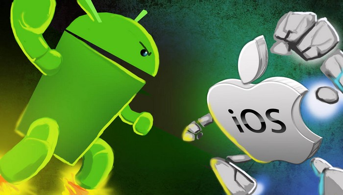

Comparaison entre Android et iOS
Quelles sont les différences entre le développement sur Android et iOS ?
Créer des applications pour Android et iOS peut sembler similaire aux personnes non averties, cependant chacun de ces deux systèmes d’exploitation a ses propres particularités.
Il existe de nombreuses différences entre le développement d’applications entre Android et iOS, tant dans les bases techniques du développement d’une application que dans le processus de création d’une application elle-même. Et pas seulement au niveau technique du développement mais aussi en termes de conception et de stratégie marketing de l’application.
En d’autres termes, tout le concept d’une application dépendra du système d’exploitation choisi.

Tableau comparatif
| Android | iOS | |
|---|---|---|
| IDE | Android Studio, NetBeans IDE, Visual Studio Code | Xcode, Appcode, Atom |
| Développeur | Apple | |
| Open Source | Oui | Non |
| Personnalisation | Très fortement personnalisable | Très peu personnalisable sauf si l'appareil est jailbreaké |
| Langage de programmation | C, C++, Java, C#, HTML | C, C++, Objective-C, Swift, HTML |
| Store | Google Play | Apple Store |
| Dernière version Stable | 11.0.x | 14.0.1 |
| Support physique | Les téléphones utilisent une surcouche d’Android. La surcouche “stock”,est la forme la plus simple d’Android, fourni par Google et est utilisée notamment par Nexus | iPhone, iPad, Apple TV, iPod |
| Navigateur (default) | Google Chrome | Safari |
| Système de paiement | Android Pay | Apple Pay |
| Points positifs | OS le plus utilisé au monde, Reste plus tourné développeur, Langage de programmation plus accessible | En pleine expansion, Structure physique unique |
| Points négatifs | Mise à jour lente, Surcouches constructeurs | Accessibilité onéreuse, Système d'exploitation fermé |